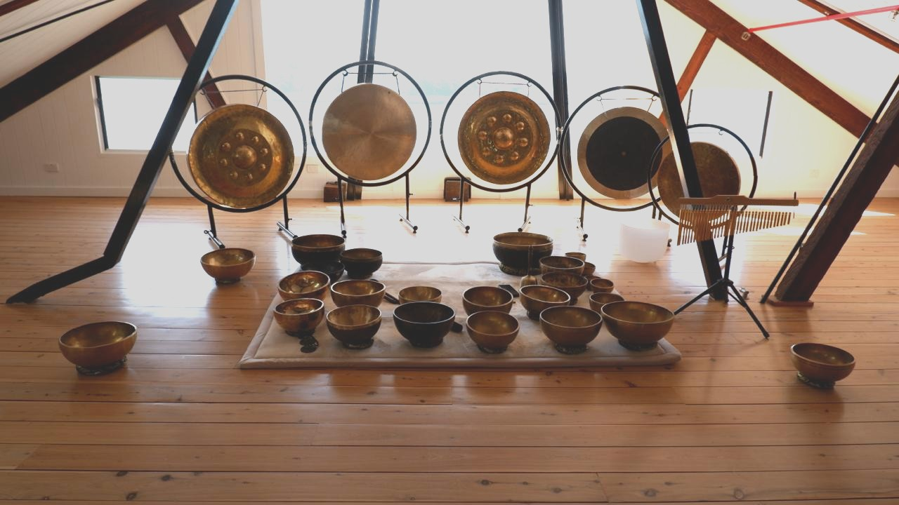

Corporate Wellness: Why Sound Baths Are Taking Over Lunchtime
Virgin Active gyms are packed at midday with corporate workers lying down for sound baths. Inside the phenomenon transforming workplace wellness.
Read More →Luke Collins
Insights into sound healing and wellness
Virgin Active gyms are packed at midday with corporate workers lying down for sound baths. Inside the phenomenon transforming workplace wellness.
Read More →
Everything you need to know before your first sound bath experience. Tips for beginners, what to expect, and how to get the most from your session.
Read More →
Discover how gong baths create profound healing experiences through deep vibration and resonance. Learn what makes this ancient instrument so powerful.
Read More →
See how gong bath sound therapy affects blood cells at the cellular level. Microscope images reveal blood cells before and after a gong bath session.
Read More →
Discover the ancient practice of sound healing and how vibrations from singing bowls and gongs can promote deep relaxation, reduce stress, and restore balance to body and mind.
Read More →
From reducing anxiety to improving sleep quality, explore the proven benefits of sound bath meditation and why more Australians are turning to this powerful healing practice.
Read More →
Learn about the history, craftsmanship, and healing properties of authentic Himalayan singing bowls. Plus, how to choose the right bowl for your practice.
Read More →